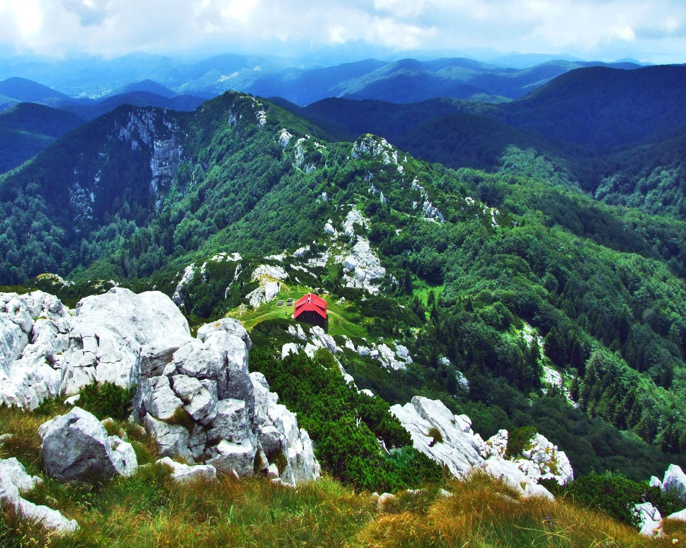

Nacionalni parkovi Hrvatske su zaštićena prirodna područja koja predstavljaju najvrednije dijelove prirodne baštine zemlje. Mnogi nacionalni parkovi u Hrvatskoj također su UNESCO-va svjetska baština ili morski rezervati, što dodatno naglašava njihovu važnost za svjetsku zajednicu i očuvanje prirode.
Svaki nacionalni park ima svoje specifične značajke, uključujući različite vrste staništa, floru, faunu i geološke formacije. Ovi parkovi imaju za cilj očuvanje biološke raznolikosti, prirodnih ekosustava te kulturnog i povijesnog naslijeđa.
Nacionalni parkovi su često popularne turističke destinacije koje pružaju priliku za obrazovanje, rekreaciju i relaksaciju posjetiteljima. Posjetitelji nacionalnih parkova mogu uživati u raznim aktivnostima kao što su pješačenje, planinarenje, vožnja biciklom, razgledavanje prirodnih ljepota, istraživanje kulturnih spomenika i promatranje divljih životinja.